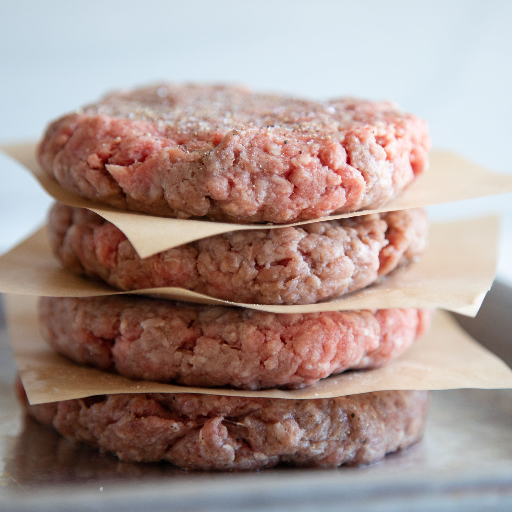

Traditional Southern Burger

Description
Best burger recipe. Great taste and really juicy
Ingredients
- 2 1/2 pounds ground chuck
- 1/2 Cup minced onions
- 1 tbsp minced garlic
- 1/4 cup chopped parsley
- 1 whole egg
- 1/4 cup grated parmesean cheese
- 2 tbsps Worcestershire sauce
- 1/2 cup seasoned italian breadcrumbs
- Salt and fresh ground pepper to taste
- 3 tbsps melted butter (for cooking)
Method
- Mix the meat along with all the other ingredients in a
large mixing bowl. Do not overwork as it tends to toughen the
burger.
- Before cooking brush one side with melted butter and place butter
side down on the cooking surface
- Continue to flip every two minutes until the burger is done
to your liking
- Assemble your burger how you like it and enjoy
Home